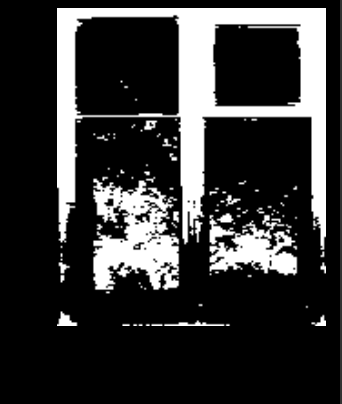
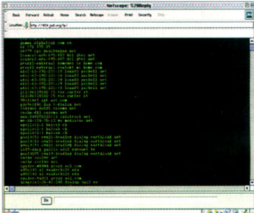
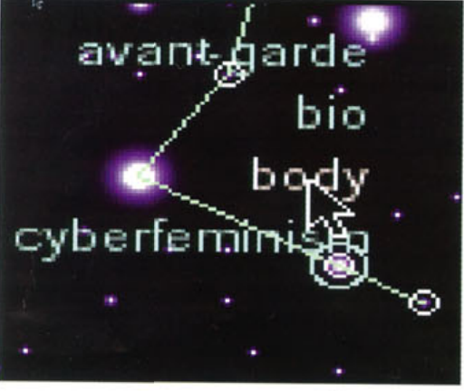

With Galleries Closed, a Moment for Net Artists to Shine
This reading was interesting to see how vast the web is. It made me wonder how many other "net artists" are out there and the best ways to view their work. It was also beautiful to see that during the pandemic, creativity still continued and people found other ways to showcase their art. It is also interesting to see that gifs had been around for longer than I thought. As someone who constantly is on social media, I thought it was new but seeing that it was already created as art and not for memes made me respect it much more. Netart is a form of art I definitely want to look into more. It intrigues me that coding can really be not only innovating something, but also an outlet for creatives. It makes me hold much more interest in coding.

With Galleries Closed, a Moment for Net Artists to Shine
It is very fun to read about how artists were so meta when it came to new innovations within creativity. It was also commendable to read that they chose to use hyperlinks so other companies would not be able to gain control over their works. I think when it comes to the concept of identity, it still is common now where people can easily hide who they are online. But for the ones who used the internet for the sake of story telling, I enjoy how intricate it was and how unique it is. I feel as if artnet is now becomming more commonly used, but it is still not as appreciated as it should be. Looking at the history of it and how much others enjoyed it makes me want it to have more publicity. However, seeing that in the past they purposefully "hid" it, maybe that's why it still is "hidden" today.

